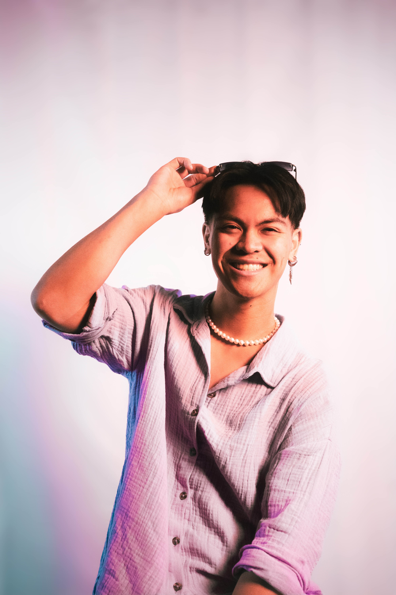
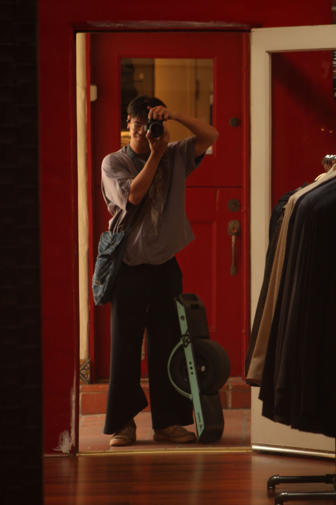
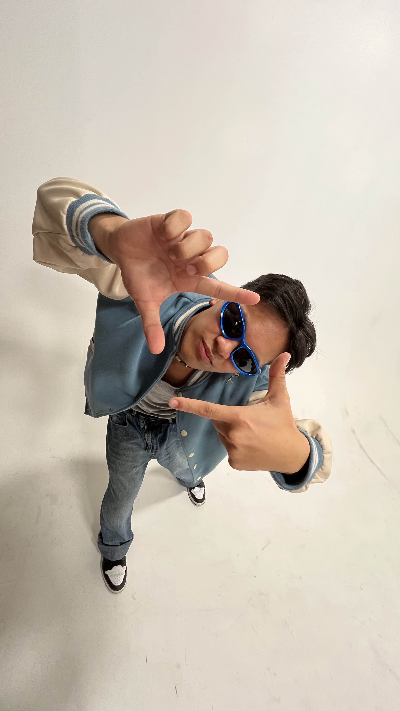
about me
I’m a 22-year-old Filipino-American from Carson, California, and a Electrical Computer Engineering graduate from Cal Poly Pomona. I thrive at the intersection of theory and hands-on innovation, channeling my love of circuitry and code into creative projects that let me bring ideas to life. When I’m not designing or debugging, you’ll find me watching movies for inspiration, expressing myself through dance, or dreaming up my next build.
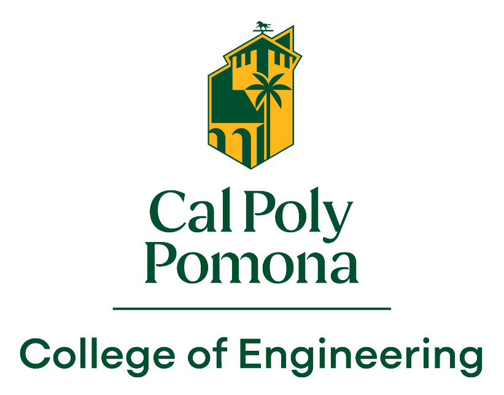
education
I attended Cal Poly Pomona studying my Bachelor’s in Electrical Computer Engineering. I chose ECE because I was drawn to both computer science software and electrical hardware. During my time in college, I participated in clubs like the Northrup Grumman Collaboration Project and building a weather station using sensor-fusion and an ESP32 for our Search & Rescue drone. In my Bio-Medical class I built a non-invasive heart rate sensor harness for my cat as well!
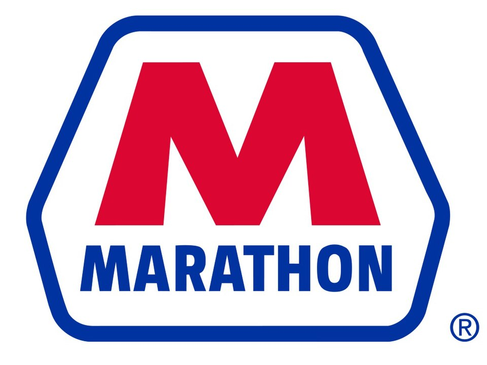
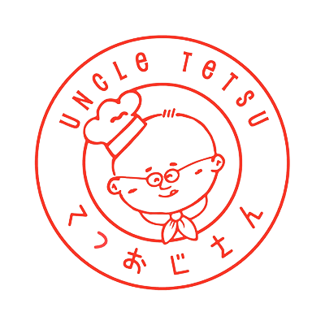
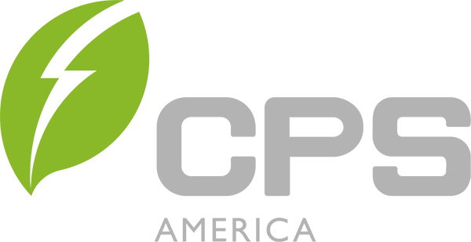
work
My experience spans operations, systems administration, video production, and IT. Earlier roles at Marathon Petroleum, Uncle Tetsu, and LMNL Dance Studio helped me build a practical foundation in operations, technical support, and creative problem-solving.
At Chint Power Systems (CPS), I support system administration, troubleshooting, and network operations. At Pyro-E, I work as an Electrical Engineer Underwater Robotics Intern, developing the EEL-Drone’s autonomy system through sensor fusion, Ping360 sonar object detection, waypoint generation, and heading-based PID control.
projects
EEL-Drone Project
Underwater drone autonomy and sensor fusion
NGCP Weather Station Project
ESP32 environmental monitoring for search and rescue
Morse Code Translator
Mouse-controlled Morse code translation on a Nexys A7-100T
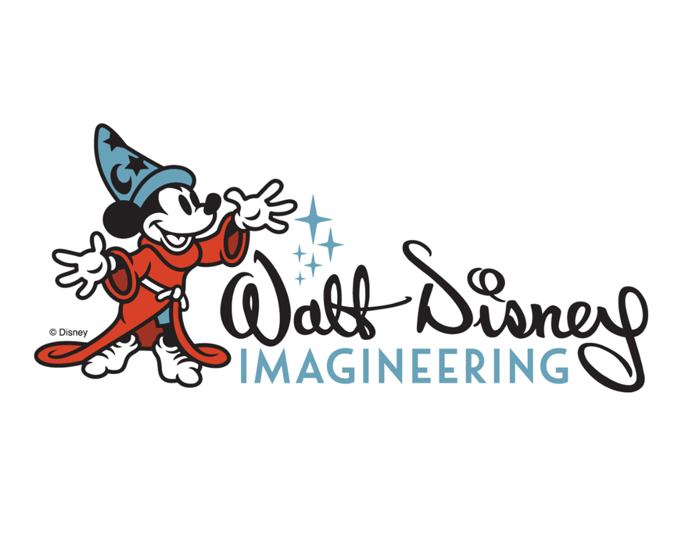
Disney Imagineer Competition
Lead on Disney Imagineer Competition 2024
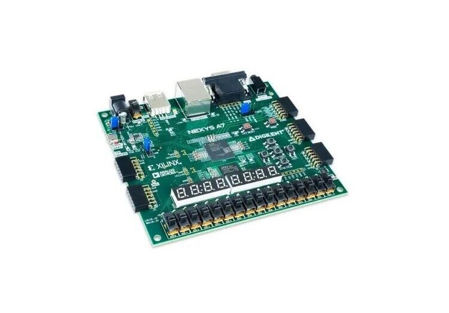
FPGA Doodle Jump
Created Doodle Jump on a Nexus A7 100T
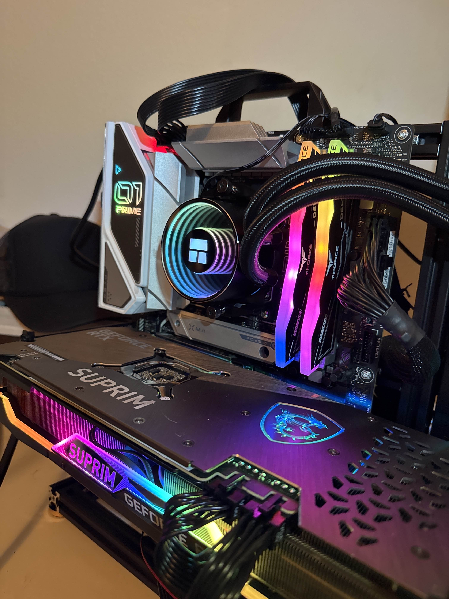
Computer Builds
I build computers :)
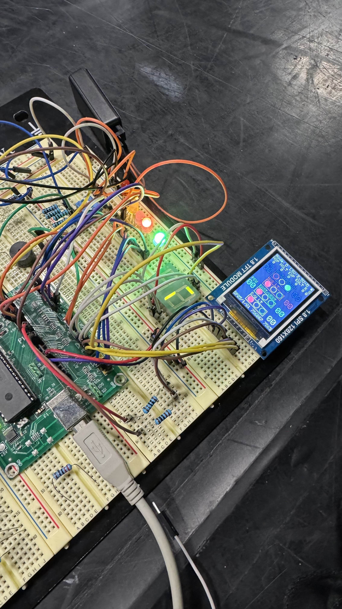
Microcontrollers Stoplight
Created on a PIC18F4620 using MPLABX
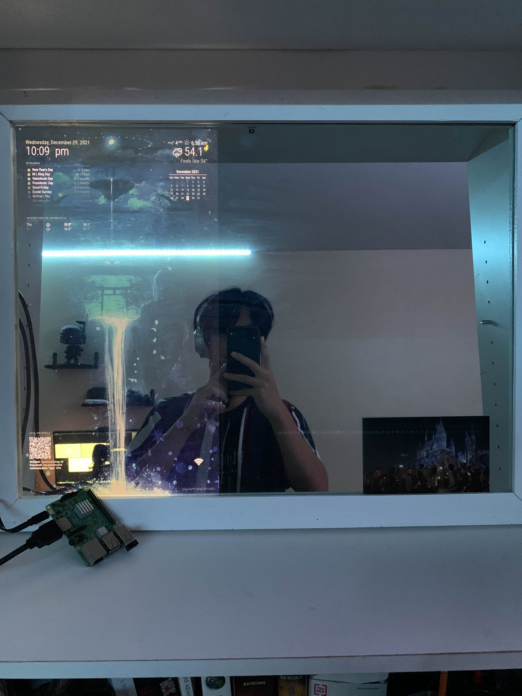
MagicMirror Smart Mirror
Built a Smart Mirror from scratch using a Raspberry Pi
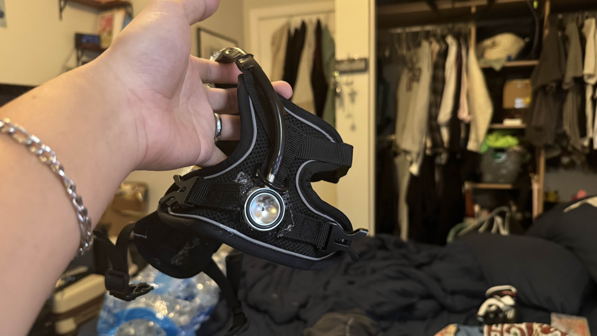
Cat Heart Rate Monitor Harness
Designed a custom heart-rate monitor harness for my cat using an ESP32 and a MEMS microphone.
Cat Heart Rate Monitor Harness
Developed a microcontroller-based cat heart-rate monitoring harness using an ESP32, INMP441 MEMS microphone, real-time FFT filtering, and ESP-NOW wireless communication. The receiver unit renders a live ECG-style waveform on a TFT display, enabling continuous, low-power feline vital tracking.
Watch on YouTube ↗

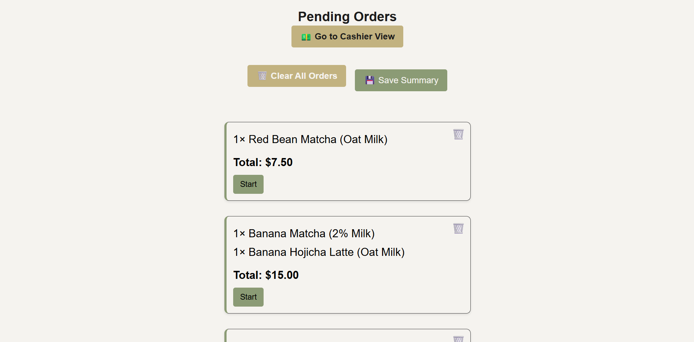
Cafe Sumire Ticketing System
Developed a full-stack ticketing system
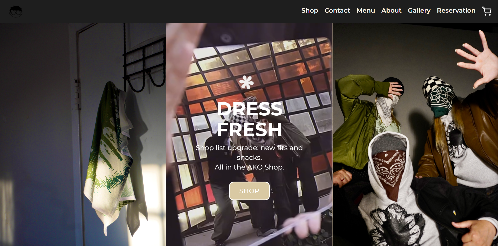
AKO by Lee Webite
Built a Cafe Website HTML/CSS/JS